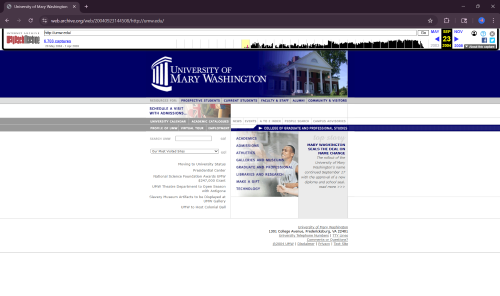
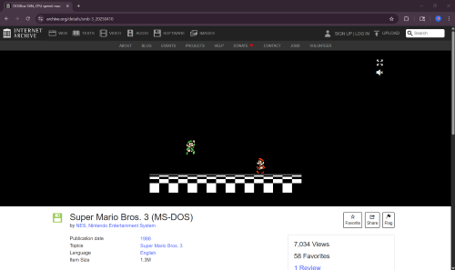
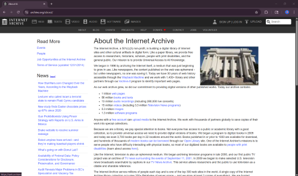
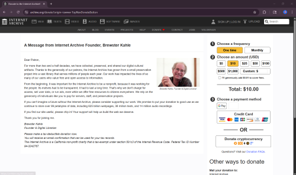
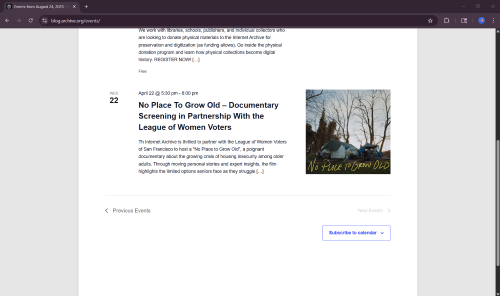

Internet Archive Useability
The Internet Archive (archive.org) seeks to record and display internet history in this new media age. Find out how easy it is to access and use the website yourself here, or see an example of how others have found the website.
The System Usability Scale
The SUS is a 10 item questionnaire with 5 response options. The SUS uses the following response format:
Placeholder
Common Problems:
- Trouble finding past recorded websites
- Our participants had trouble finding websites on the Internet Archive, and when they did find them, they had trouble accessing past versions. We recommend knowing the website URL going into the search and searching for archived websites.
- Not knowing where to look
- Our participants didn't know about the different functions of archive.org, so they had trouble with the second task. We recommend looking into the different categories in the menu.
- Event trouble
- Our participants had a hard time figuring out how to find an event close to a certain date, and they tried to search for the date in various places. We recommend simply scrolling through the event page.
Tasks to complete:
- Go to any old University of Mary Washington website.
- Play the video game Super Mario Bros. 3.
- Find the answer to the question: how many web pages do they have?
- Find the answer to the question: are donations to the website tax deductible?
- Find out which event will happen closest to the University of Mary Washington’s graduation (May 9th).
An example of one attempt:
- Time: 04:02:12. This person immediately found the Wayback Machine, but ultimately gave up because of problems in finding the website.

- Time: 06:03:04. They found the game in the search, but could not play the game. Once they made their way to the software page, they got stuck in the wrong archive.

- Time: 00:13:29. They quickly found the answer on the webpage search tab.

- Time: 01:16:34. They quickly found the donation page, but missed the key information at the bottom of the page. They succeeded by looking in the FAQ section.

- Time: 01:14:71. They quickly found the events, but got stuck when searching for the date. They realized their mistake and figured out the answer.

SUS Score:
45 out of 100